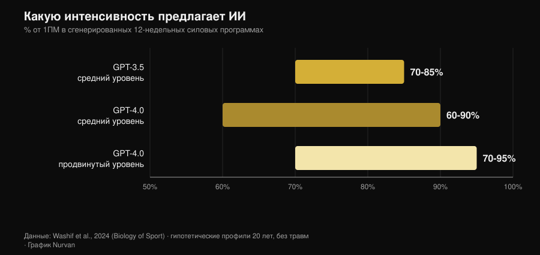
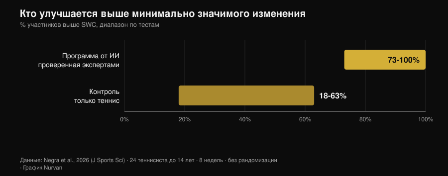

План тренировок от ИИ: что говорят исследования
Просишь у чат-бота программу — и через десять секунд получаешь двенадцать недель тренировок: с фазами, процентами от разового максимума и временем отдыха между подходами. Выглядит грамотно. Но настоящий вопрос не в том, умеет ли ИИ написать план — умеет, — а в том, твой ли это план и какая часть того, что заставляет программу работать, вообще не попадает в этот файл. С 2024 года несколько исследовательских групп перестали спорить и начали измерять: они заставляли модели генерировать программы, отдавали их экспертам с оценочными шкалами, а в одном случае дали спортсменам отработать такую программу восемь недель. Результаты оказались интереснее той версии, которую рассказывает реклама приложений.

Коротко о главном
- План выходит разумным, но это черновик. Двенадцатинедельные программы из трёх фаз, интенсивность от 60% до 95% от 1ПМ в зависимости от уровня: структура согласуется с учебниками, но сами программы «скорее всего требуют дополнительной доработки перед применением» (Washif et al., 2024).
- Это не персонализация, а универсальный шаблон в костюме. В той же работе программы, сгенерированные для мужского и для женского профиля, оказались объективно похожими. Модель поменяла подпись, а не содержание.
- Он может работать — если проходит через руки человека. Восемь недель эксцентрической программы от ChatGPT, проверенной экспертами до начала работы: спринт на 5 м, смена направления и ловкость выросли, прыжки — нет (Negra et al., 2026).
- У обещания «чат-бот не даст тебе бросить» нет доказательств. Систематический обзор семи рандомизированных испытаний: непоследовательные эффекты на физическую активность и питание у взрослых, у детей эффекта не обнаружено. Работает с курением, но не с залом (Chen et al., 2025).
- С калориями он точнее в отдельном рецепте, чем в целом рационе. Сгенерированные дневные планы и рецепты пересчитали по базам данных о составе продуктов: рецепты держались лучше, чем меню на день (Aslan и Sozlu, 2025).
- Он не опасен, он неполон. Двенадцать физиотерапевтов признали ответы ChatGPT безопасными и в основном точными в пяти доменах из шести, но недостаточно полными (Schütze et al., 2026).
Что на самом деле происходит, когда ты просишь «составь мне программу»
Языковая модель не рассчитывает твою программу: она предсказывает самый вероятный текст, исходя из того, что ты написал. На выходе получается осмысленное среднее по всему, что модель прочитала, а поскольку прочитала она много серьёзных учебников, это среднее обычно выглядит здраво. Именно поэтому сгенерированные планы хороши на первый взгляд: фазы на месте, диапазоны повторений адекватные, разминка стоит там, где и должна.
Проблема начинается потом. Программа существует, чтобы вызвать адаптацию у одного человека — с его историей рабочих весов, его графиком, его ноющим плечом и его собственной реакцией на усталость. Ничего из этого нет в запросе, и ничего из этого нет в тексте, который возвращает модель: это приходит неделя за неделей. Исследования ниже измеряют ровно эту дистанцию.
Что на самом деле говорят исследования
| Распространённое утверждение | Вердикт | Источник |
|---|---|---|
| «ИИ пишет разумную программу» | Подтверждено, но это черновик | Washif et al., 2024 |
| «Программа составлена именно под тебя» | Опровергнуто | Washif et al., 2024 |
| «Программа от ИИ не работает» | Опровергнуто, с одним условием | Negra et al., 2026 |
| «Новые версии всё это исправили» | Нужны уточнения | Genç et al., 2025 |
| «Чат-бот не даст тебе бросить» | Не подтверждено | Chen et al., 2025 |
| «У него можно спросить и про питание» | Нужны уточнения | Aslan и Sozlu, 2025 |
| «Это опасно» | Нужны уточнения: скорее неполно, чем небезопасно | Schütze et al., 2026 |
Утверждение 1 — «ИИ пишет разумную программу»
Первая проиндексированная работа, которая разобрала вопрос по существу, попросила GPT-3.5 и GPT-4.0 составить двенадцатинедельные силовые программы для гипотетических двадцатилетних — сначала со средним опытом, затем с продвинутым. Обе версии выдали по три четырёхнедельные фазы с разными задачами (гипертрофия, сила), с параметрами внутри учебниковых диапазонов и согласованными интервалами отдыха.

Различия между версиями есть, и они идут в ожидаемую сторону: GPT-4.0 отличает средний уровень от продвинутого, расширяет окно отдыха (с 60–180 до 60–300 секунд) и удерживает больше информации одновременно. Вывод авторов при этом звучит жёстко: программы «скорее всего требуют дополнительной доработки перед применением», а модель «может служить вспомогательным инструментом для написания черновика».
Черновик — здесь ключевое слово. Правдоподобный план и подходящий план — разные вещи.
Утверждение 2 — «Программа составлена именно под тебя»
Это самый неудобный результат той же работы, и его почти никто не цитирует. Авторам достаточно было поменять в запросе пол профиля, чтобы увидеть, что произойдёт: все сгенерированные программы вышли объективно похожими независимо от пола. Это замечание не про физиологию — рекомендации по тренировкам для мужчин и женщин действительно сильно перекрываются, — а про механизм: модель не использовала единственную индивидуальную деталь, которую ей дали.
Если явно указанный в запросе параметр не меняет результат, то всё, что ты не написал, весит ноль. А не написал ты почти всё: сколько ты спал, чего тебе стоила вчерашняя тренировка, почему правое плечо тянет только в жиме широким хватом.
Утверждение 3 — «Программа от ИИ не работает»
Первое интервенционное исследование появилось в 2026 году. Двадцать четыре теннисиста до 14 лет разделили на две группы: одна восемь недель выполняла эксцентрическую программу, сгенерированную ChatGPT, вторая просто продолжала заниматься теннисом. Группа ИИ значимо улучшила спринт на 5 метров, смену направления (тест 505) и ловкость, с размерами эффекта от 0,6 до 2,15 против 0,15–0,6 в контроле. В спринте на 10 метров и в прыжковых тестах разницы между группами не было.

Условие спрятано в одной строке раздела «Методы»: сгенерированная ИИ программа была проверена живыми экспертами, прежде чем её кому-то дали. Это не «ИИ тренировал группу подростков». Это «эксперты использовали ИИ, чтобы написать первую версию, проверили её и только потом запустили в работу». Это ровно тот порядок действий, который работает, и ровно та причина, по которой исследование не разрешает пропускать проверку.
Утверждение 4 — «Новые версии всё это исправили»
Одна исследовательская группа заставила три версии ChatGPT генерировать двенадцатинедельные силовые программы по семи разным наборам инструкций, а затем отдала результаты на оценку семи экспертам — тренерам с сертификацией CSCS и кандидатам наук в области спортивной науки со стажем не менее десяти лет — по шкале, которая учитывала, помимо прочего, индивидуализацию прогрессии, возможность модификации программы, риск травмы и наличие некорректных рекомендаций.
Различия между версиями оказались статистически значимыми во всех парных сравнениях (p = 0,018), а самую свежую версию признали более детальной, более внутренне непротиворечивой и лучше опирающейся на литературу. Улучшение настоящее. Но вывод авторов совпадает с выводом 2024 года: чтобы план, составленный с помощью ИИ, был безопасным, основанным на доказательствах и индивидуальным, «участие квалифицированной человеческой экспертизы остаётся необходимым». Новые версии улучшают черновик, но не отменяют проверку.
Утверждение 5 — «Чат-бот держит тебя в режиме лучше, чем тренер»
Здесь маркетинговое обещание сильно опережает данные. Систематический обзор просеял двенадцать баз данных и 6301 запись, чтобы выделить рандомизированные испытания чат-ботов, способных поддерживать свободный диалог на естественном языке: осталось семь. По курению эффекты согласованные. По питанию и физической активности у взрослых они непоследовательные, у детей доказательств эффекта нет, а два из четырёх исследований по физической активности имеют высокий риск систематической ошибки.
Одна деталь объясняет многое: пользователи охотно общались с чат-ботами в целом, но заметно меньше — именно по конкретному поведению, связанному со здоровьем. Удовлетворённость высокая, изменение поведения — нет. Это разница между приложением, которое тебе нравится, и приложением, которое заставляет тебя тренироваться, — и та же самая разница отделяет приятного тренера от тренера, который даёт результат. Цифры по человеческому контролю я собрал в материале о том, работает ли онлайн-коучинг на самом деле.
Утверждение 6 — «У него всё равно можно спросить и про питание»
Пилотное исследование попросило ChatGPT составить дневные рационы на 1500, 2000 и 2500 ккал и рецепты на 300, 500 и 700 ккал, а затем пересчитало всё по базам данных о составе продуктов. Модель оказалась точнее в построении одного рецепта с заданной калорийностью, чем в составлении рациона на целый день: чем меньше и чем более ограничен объект, тем меньше накапливается ошибка.
Это пилот на уже устаревшей версии, поэтому он годится как методическая подсказка, а не как вердикт. Подсказка всё равно полезная: используй ИИ для деталей, а не для каркаса. А когда нужны настоящие граммы, нужны настоящие граммы из базы данных продуктов, а не правдоподобная оценка.
Утверждение 7 — «Это опасно»
Самая суровая проверка пришла из-за пределов зала. Двенадцать опытных физиотерапевтов оценили ответы ChatGPT на шесть вопросов о физических упражнениях при редком мышечном заболевании по шкале от «полно и точно» до «неверно и небезопасно». Вердикт: ответы безопасные и в основном точные в пяти доменах из шести, но часто недостаточно полные.
Это типичный профиль риска: модель не советует тебе сделать что-то абсурдное — она говорит нечто разумное, оставляя за кадром ту часть, которая имела значение. В спортивной медицине вывод тот же: хорошие показатели модели на собственных тестах не превращаются автоматически в лучшие исходы, и специалист остаётся в контуре как тот, кто сводит информацию воедино (Palermi et al., 2026). Симптом, который не проходит, боль, которая усиливается, анализ, который нужно истолковать, — это работа врача, а не чат-бота.
Как пользоваться этим правильно
- Используй его для черновика, а не для решения. Стартовый план, идеи вариаций упражнений, перекомпоновка программы, которая у тебя уже есть, — да. Выбор рабочего веса на завтра — нет.
- Дай ему тот контекст, который у тебя действительно есть. История рабочих весов, RIR последних тренировок, доступные дни, травмы. Без этого, как показал Washif, результат почти не меняется, даже если менять профиль.
- Проверяй цифры. Если модель ссылается на исследование — найди его: выдуманные ссылки — самый быстрый способ принести в зал ложное убеждение.
- Покажи план тому, кто умеет его читать. В единственном положительном интервенционном исследовании программа была проверена живыми экспертами до начала работы. Это и есть граница между инструментом и заменой.
- Измеряй, а не доверяй. Через четыре недели смотри на веса, а не на ощущения: если черновик не даёт прогрессии, значит, это неправильный черновик.
- Держи его подальше от медицины. Заболевания, лекарства, результаты анализов: никакого чат-бота, никакого приложения. К врачу.
Попробуйте Nurvan — ИИ пишет черновик, ваши данные его исправляют
В Nurvan программа не остаётся текстом: вес, повторения и RIR каждого подхода попадают в историю, разминочные подходы предлагаются исходя из рабочего веса на сегодня, а прогрессия строится на том, что вы действительно подняли. Если вы работаете с тренером, он видит те же цифры и правит там, где нужно, — а это ровно та часть, которой сгенерированному плану не хватает.
Частые вопросы
Можно ли составить программу тренировок через ChatGPT?
Как черновик — да, как окончательную программу — нет. Исследования, которые оценивали сгенерированные планы, описывают их как структурно связные, но требующие доработки, и сходятся в одном: чтобы сделать их безопасными и индивидуальными, нужна квалифицированная человеческая экспертиза (Washif et al., 2024; Genç et al., 2025).
Отличается ли план от ИИ для мужчин и для женщин?
В исследовании, которое это проверяло, — нет: программы для мужского и женского профилей оказались объективно похожими (Washif et al., 2024). Если ты ждёшь персонализации просто потому, что указал, кто ты, скорее всего, ты её не получаешь.
Поможет ли приложение с ИИ не бросить тренировки?
Надёжных доказательств пока нет. По семи доступным рандомизированным испытаниям эффекты чат-ботов на физическую активность и питание у взрослых непоследовательны; единственный согласованный результат — по курению (Chen et al., 2025).
Что выбрать: ИИ или живого тренера?
Они не конкурируют за одну и ту же работу: один пишет текст, второй смотрит на тебя. Данные по контролю показывают, что решающий вклад человека — заставить выполнить программу правильно, а не написать её: при одном инструкторе на пять занимающихся максимум в жиме лёжа вырос на 15,9% против 10,2% при одном инструкторе на двадцать пять (Gentil и Bottaro, 2010).
Читайте также
- Работает ли онлайн-коучинг? Что говорят исследования — насколько на самом деле важно, чтобы за тобой следили, с цифрами на руках.
- Сколько повторений нужно для роста мышц? Миф о 8–12 — те самые переменные программирования, которые достаются черновику от ИИ, и что о них говорят данные.
- Фитнес-тренды 2027: что действительно работает — где технологии находятся между модой и тем, что выдерживает проверку.
Источники
Библиографические ссылки получены через PubMed. Тема выбрана по анализу трендов 2 ноября 2026 года: вопрос «ИИ или тренер» — один из самых частых запросов в фитнесе прямо сейчас, но страницы, которые занимают выдачу, — это блоги разработчиков софта без единого источника.
- Washif JA, Pagaduan J, James C, Dergaa I, Beaven CM, 2024. Artificial intelligence in sport: Exploring the potential of using ChatGPT in resistance training prescription. Biology of Sport 41(2):209-220. PMID 38524820. DOI
- Genç A, Aydın GR, Kasap M, Özkan A, Rakhymzhanov A, Gürcan HH, Güllü S, Demirhan B, 2025. Comparative evaluation of ChatGPT versions in training program design: scientific approach, accuracy, and practical applicability. BMC Sports Science, Medicine and Rehabilitation 18(1):19. PMID 41345701. DOI
- Negra Y, Sammoud S, Bouguezzi R, Markov A, Capranica L, Müller P, Chaabene H, 2026. Effects of a ChatGPT-generated eccentric training programme on speed, change of direction, agility, and jumping performance in U14 tennis players: A non-randomised controlled study. Journal of Sports Sciences. PMID 41944488. DOI
- Chen J, Hu RZ, Zhuang YX, Zhang JQ, Shan R, Yang Y, Liu Z, 2025. Natural Language Processing Chatbot-Based Interventions for Improvement of Diet, Physical Activity, and Tobacco Smoking Behaviors: Systematic Review. JMIR mHealth and uHealth 13:e66403. PMID 40503914. DOI
- Aslan S, Sozlu S, 2025. A pilot study of the potential role of ChatGPT in stated-calorie diet planning. International Journal of Obesity 49(9):1891-1896. PMID 40628963. DOI
- Schütze K, Shehatha R, Beer K, Needham M, Smith T, Bagg M, Doverty A, Cooper I, 2026. Evaluating ChatGPT's advice and recommendations regarding exercise for people with inclusion body myositis. Neuromuscular Disorders 62:106418. PMID 41950577. DOI
- Palermi S, Pucciatti R, Regnard NE, et al., 2026. Artificial Intelligence in Sports Medicine: A Decision-Centered Framework for the Future Sports Physician. Diagnostics 16(10):1448. PMID 42196815. DOI
- Gentil P, Bottaro M, 2010. Influence of supervision ratio on muscle adaptations to resistance training in nontrained subjects. Journal of Strength and Conditioning Research 24(3):639-43. PMID 19661830. DOI
Giammaria Loi — основатель Nurvan. Занимается с отягощениями с 2012 года, работает персональным тренером и сертифицированным коучем FIPE с 2013 года и с 2018 года выступает в пауэрлифтинге на национальном уровне. Каждая статья, которую он подписывает, начинается с научных исследований и заканчивается тем, что действительно работает в зале.
Примечание: информационный материал, не заменяет консультацию врача или квалифицированного специалиста.